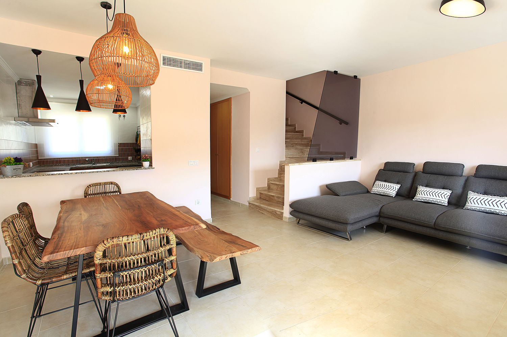

BENESTAR in JALON VALLEY
DESCRIPCIÓN
Benestar In Jalon Valley, cuenta con piscina al aire libre, jardín y terraza, dispone de alojamiento en Alcalalí con wifi gratis y vistas a la montaña.
La casa tiene parking privado gratis, está en una zona en la que se pueden practicar actividades como senderismo, pesca y snorkel.
Casa con aire acondicionado consta de 3 dormitorios, una sala de estar, una cocina totalmente equipada con nevera y cafetera, y 3 baños con bidet y ducha.
Hay toallas y ropa de cama en la casa. Se puede practicar ciclismo en los alrededores.
Terra Natura está a 45 km del alojamiento, y Parque Acuático Aqua Natura está a 46 km.
El aeropuerto (Aeropuerto de Alicante - Elche Miguel Hernández) está a 98 km.


¿Qué hay en este alojamiento?
-
GENERAL
- Vistas a la montaña
- Vistas al jardín
- Aparcamiento gratuito en las instalaciones
- Cargador electrico Coche
- Cocina, Wifi, Zona para trabajar
- Piscina descubierta compartida: disponible todo el año,
disponible en un horario específico - Tumbonas y Parasol
-
HABITACIONES
- Toallas, sábanas, jabón y papel higiénico
- Perchas
- Ropa de cama
- Almohadas y mantas adicionales
- Plancha
- Cuna de pago: disponible previa solicitud
- Trona de mesa de pago: disponible previa solicitud
Con con cinturón o arnés y con bandeja para comer
-
COCINA
- Mesa de comedor
- Cafetera
- Productos de limpieza
- Tostadora
- Horno
- Utensilios de cocina
- Hervidor eléctrico
- Cocina
- Lavadora
- Lavavajillas
- Microondas
- Nevera
- Zona de cocina
-
BAÑO
- Papel higiénico
- Toallas
- Baño adicional
- Bidet
- Aseo adicional
- Bañera o ducha
- Baño privado
- WC
- Bañera de hidromasaje
- Secador de pelo
- Bañera
- Ducha
-
SALON DE ESTAR
- Comedor
- Sofá
- TV
- Mesa rústica
- Aire acondicionado



¿Qué actividades hacer durante tu estancia?
-
ACTIVIDADES DISPONIBLES ALREDEDORES
- Tours en bici
- Rutas a pie
- Senderismo
- Playa
- windsurf
- Submarinismo
- Zona de descanso con barbacoas
- Zona deportiva cercana (500mts)
con instalaciones varias - Juegos mesa y varios en estancia
NORMAS DE LA CASA
Cantidad máxima de huespedes: 6 personas.
Número de licencia: VT-478604-4
EntradaDe las 17:00 a las 20:00
Los clientes deben mostrar un documento de identidad con fotografía y una tarjeta de crédito en el momento de hacer el check-in Tienes que avisar al alojamiento con antelación a qué hora vas a llegar.
SalidaDe las 09:00 a las 11:00
Condiciones sobre daños en el alojamientoSe recogera una fianza de 300 euros para cubrir daños al alojamiento durante tu estancia, dicha fianza se retornara después del check-out.
Restricción por edadEdad mínima para el check-in: 25.
Fumadores / No fumadoresNo se puede fumar.
Condiciones para estancias con niñosSe pueden alojar niños de cualquier edad.
Condiciones sobre cunas y camas supletorias.Edad: 0 - 2 años
- Cuna a petición.
- €14 por estancia.
El precio de las cunas no está incluido en el precio total y se tiene que pagar por separado durante la estancia. No hay camas supletorias disponibles en este alojamiento. Todas las cunas están sujetas a disponibilidad.
FiestasNo se pueden celebrar fiestas/eventos
Horario sin ruido.Los clientes deben minimizar el ruido de 23:00 a 09:00
MascotasSe admiten bajo petición. Se pueden aplicar suplementos.
Información importante sobre el alojamiento.El alojamiento tiene un cargador de coche eléctrico sin costo adicional durante las horas solares, ya que está conectado a paneles solares. En tiempos no-solar el consumo del kW será pagado por el huésped. Consulte el establecimiento antes de utilizar el servicio.
Si te alojas con una mascota, cada mascota tendrá que pagar un precio de 30 euros por estancia. Sólo se permitirá un máximo de 2 mascotas y si este fuera el caso el precio sería de 50 euros por estancia.
Los huéspedes deberán mostrar un documento de identidad válido y una tarjeta de crédito al realizar el registro de entrada.
Ten en cuenta que todas las peticiones especiales están sujetas a disponibilidad y pueden comportar suplementos.
Informa a Benestar In Jalon Valley con antelación de tu hora prevista de llegada.
Para ello, puedes utilizar el apartado de peticiones especiales al hacer la reserva o ponerte en contacto directamente con el alojamiento.
Los datos de contacto aparecen en la confirmación de la reserva.
En este alojamiento no se pueden celebrar despedidas de soltero o soltera ni fiestas similares.
No se puede hacer ruido de 23:00 a 09:00